24 Electrochemistry
Electrolysis, standard electrode potentials, electrochemical cells, the Nernst equation and Gibbs energy
24 Electrochemistry
本章按 CIE 2025–2027 syllabus 的顺序组织为 24.1 Electrolysis 和 24.2 Standard electrode potentials, standard cell potentials and the Nernst equation。24.1 只保留考纲要求的 Faraday、\(Q=It\)、\(F=Le\)、electroplating 和 Avogadro constant 计算；不展开 AS 1.6 的定性 electrolysis 产物判断。
Learning objectives
学完本章后，你应该能够：
- use \(Q=It\), \(Q=nF\) and \(F=Le\) in electrolysis calculations;
- use half-equations to calculate the mass of a deposited substance and the volume of a gas;
- describe copper electroplating and the experiment used to determine the Avogadro constant;
- state the standard conditions and describe the standard hydrogen electrode (SHE);
- explain electrode potential as the tendency of a redox system to undergo reduction;
- identify the electrode required for different types of half-cell;
- draw and interpret conventional cell diagrams, including the salt bridge and electron flow;
- calculate \(E^\ominus_{\mathrm{cell}}\) and use its sign to assess feasibility;
- identify oxidising agents, reducing agents, anodes, cathodes, positive poles and negative poles;
- use the Nernst equation at 298 K and at other temperatures;
- calculate \(\Delta G^\ominus\) from \(E^\ominus_{\mathrm{cell}}\).
24.1 Electrolysis
Faraday’s law and electrochemical calculations
Faraday’s law relates the charge passed through an electrolytic cell to the amount of chemical change. The first step in every calculation is to write the relevant half-equation and identify the mole ratio between the required product and electrons.
\[Q=It\]
\[Q=n(e^-)F\]
\[F=96500\ \mathrm{C\ mol^{-1}}\]
where \(Q\) is charge in coulombs, \(I\) is current in amperes, \(t\) is time in seconds, and \(n(e^-)\) is the amount of electrons in moles.
对于金属离子 \(\ce{M^{z+}}\)：
\[\ce{M^{z+} + z e- -> M}\]
所以生成 1 mol 金属需要 \(z\) mol electrons。气体体积则要先由 half-equation 确定 gas 与 electrons 的 mole ratio，再使用题目给出的 molar gas volume。
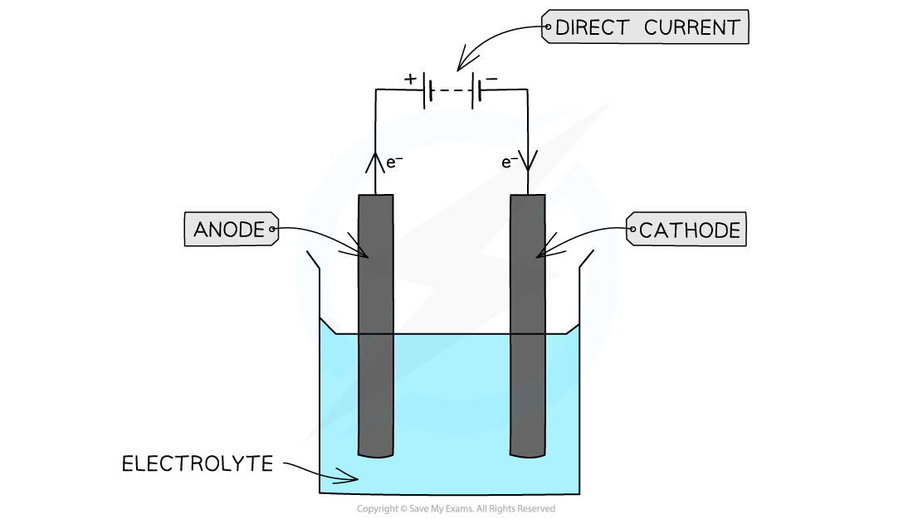
Worked example · Faraday’s law
Amount of electricity required for electrochemical reactions
Determine the amount of electricity required for the following reactions:
- To deposit 1 mol of sodium
\(\ce{Na+(aq) + e- -> Na(s)}\) - To deposit 1 mol of magnesium
\(\ce{Mg2+(aq) + 2e- -> Mg(s)}\) - To form 1 mole of fluorine gas
\(\ce{2F-(aq) -> F2(g) + 2e-}\) - To form 1 mole of oxygen
\(\ce{4OH-(aq) -> O2(g) + 2H2O(l) + 4e-}\)
One Faraday is the amount of charge, \(96\,500\ \mathrm{C}\), carried by one mole of electrons.
For sodium, the half-equation shows that one mole of electrons is required:
\[1\ F=96\,500\ \mathrm{C}\]
For magnesium, two moles of electrons are required:
\[2\ F=2\times96\,500=193\,000\ \mathrm{C}\]
For fluorine, two moles of electrons are released when one mole of fluorine gas is formed:
\[2\ F=193\,000\ \mathrm{C}\]
For oxygen, four moles of electrons are released when one mole of oxygen is formed:
\[4\ F=386\,000\ \mathrm{C}\]
Worked example · Electrolysis calculation
Deposition of magnesium
Calculate the amount of magnesium deposited when a current of 2.20 A flows through the molten bromide for 15 minutes.
Write the cathode half-equation:
\[\ce{Mg2+(aq) + 2e- -> Mg(s)}\]
Calculate the charge needed to deposit one mole of magnesium:
\[F=2\times96\,500=193\,000\ \mathrm{C\ mol^{-1}}\]
Calculate the charge transferred. Convert minutes to seconds:
\[Q=I\times t=2.20\times(60\times15)=1980\ \mathrm{C}\]
Calculate the amount of magnesium deposited:
\[n(\ce{Mg})=\frac{1980}{193\,000}=0.0103\ \mathrm{mol}\]
\[m=0.0103\times24=0.25\ \mathrm{g}\]
Final answer: \(0.25\ \mathrm{g}\) of magnesium is deposited at the cathode.
Worked example · Electrolysis calculation
Production of oxygen gas
Calculate the volume of oxygen gas produced at room temperature, when a concentrated aqueous solution of sulfuric acid, H₂SO₄, is electrolysed for 35.0 minutes using a current of 0.75 A.
Write the anode half-equation:
\[\ce{4OH-(aq) -> O2(g) + 2H2O(l) + 4e-}\]
Calculate the charge required to form one mole of oxygen:
\[F=4\times96\,500=386\,000\ \mathrm{C\ mol^{-1}}\]
Calculate the charge transferred:
\[Q=0.75\times(60\times35)=1575\ \mathrm{C}\]
Calculate the amount of oxygen:
\[n(\ce{O2})=\frac{1575}{386\,000}=4.08\times10^{-3}\ \mathrm{mol}\]
At room temperature, one mole of gas occupies \(24.0\ \mathrm{dm^3}\):
\[V=4.08\times10^{-3}\times24=0.0979\ \mathrm{dm^3}\]
Final answer: \(0.0979\ \mathrm{dm^3}\) of oxygen is formed at the anode.
Worked example · Electrolysis calculation
Production of hydrogen gas
Calculate the volume of hydrogen gas produced at room temperature, when a concentrated aqueous solution of sodium sulfate, Na₂SO₄, is electrolysed for 17.5 minutes using a current of 3.25 A.
Write the cathode half-equation:
\[\ce{2H+(aq) + 2e- -> H2(g)}\]
Calculate the charge required to form one mole of hydrogen:
\[F=2\times96\,500=193\,000\ \mathrm{C\ mol^{-1}}\]
Calculate the charge transferred:
\[Q=3.25\times(60\times17.5)=3413\ \mathrm{C}\]
Calculate the amount of hydrogen:
\[n(\ce{H2})=\frac{3413}{193\,000}=1.76\times10^{-2}\ \mathrm{mol}\]
Calculate the volume at room temperature:
\[V=1.76\times10^{-2}\times24=0.42\ \mathrm{dm^3}\]
Final answer: \(0.42\ \mathrm{dm^3}\) of hydrogen is formed at the cathode.
Electroplating and the Avogadro constant
In electroplating, the object to be coated is connected as the cathode. Metal ions in the electrolyte are reduced and deposited on its surface. For copper electroplating, the electrolyte may be aqueous copper(II) sulfate, with a copper anode and the object being plated as the cathode.
\[\ce{Cu2+(aq) + 2e- -> Cu(s)}\]
The Faraday constant can be related to the electronic charge and the Avogadro constant:
\[F=Le\]
\[L=\frac{F}{e}\]
实验中要准确测量 current、time 和 electrode mass。电极在实验前后应清洗、用 propanone 干燥并称量；cathode gains mass，而 anode loses mass。
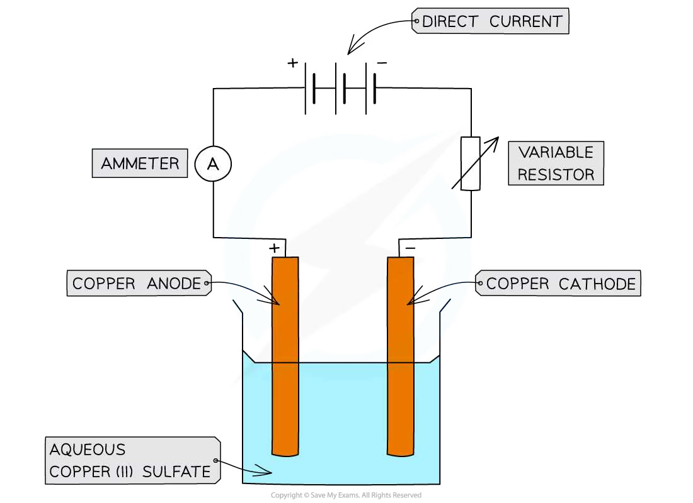
Worked example · Avogadro constant experiment
Determining the Avogadro constant from copper electroplating
A copper anode and cathode are weighed. A variable resistor is used to maintain a current of about 0.17 A. Current passes for 40 minutes. The electrodes are washed with distilled water, dried with propanone and reweighed. The cathode gains mass and the anode loses mass. In one experiment the mass change is 0.13 g Cu. Determine the Avogadro constant.
Calculate the charge passed:
\[Q=I\times t=0.17\times(60\times40)=408\ \mathrm{C}\]
Convert the mass of copper to an amount of copper:
\[n(\ce{Cu})=\frac{0.13}{63.5}=2.0\times10^{-3}\ \mathrm{mol}\]
Calculate the charge required for one mole of copper:
\[\frac{408}{0.13/63.5}=199\,292\ \mathrm{C\ mol^{-1}}\]
Use the copper half-equation:
\[\ce{Cu2+(aq) + 2e- -> Cu(s)}\]
Two moles of electrons are needed per mole of copper, so the charge on one mole of electrons is:
\[F=\frac{199\,292}{2}=99\,646\ \mathrm{C\ mol^{-1}}\]
Use \(F=Le\), where \(e=1.60\times10^{-19}\ \mathrm{C}\):
\[L=\frac{99\,646}{1.60\times10^{-19}}\approx6.23\times10^{23}\ \mathrm{mol^{-1}}\]
Final answer: \(L\approx6.23\times10^{23}\ \mathrm{mol^{-1}}\), which is close to the theoretical value \(6.02\times10^{23}\ \mathrm{mol^{-1}}\).
24.2 Standard electrode potentials, standard cell potentials and the Nernst equation
Electrode potential and reduction half-equations
把金属棒插入含有该金属离子的溶液时，会同时发生氧化和还原：
\[\ce{M(s) <=> M^{z+}(aq) + z e-}\]
在本章中 half-equation 统一写成 reduction half-equation：
\[\ce{M^{z+}(aq) + z e- <=> M(s)}\]
The electrode potential is a measure of how readily the species on the left-hand side of a reduction half-equation accepts electrons.
- \(E\) 越正，越容易发生 reduction；左侧物种是更强的 oxidising agent。
- \(E\) 越负，左侧物种越不容易发生 reduction；右侧还原态物种通常是更强的 reducing agent。
- Electrode potential 不能单独直接测量，必须与另一个 half-cell 比较。
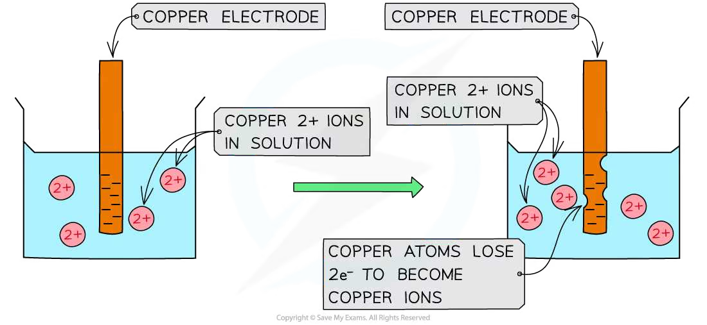
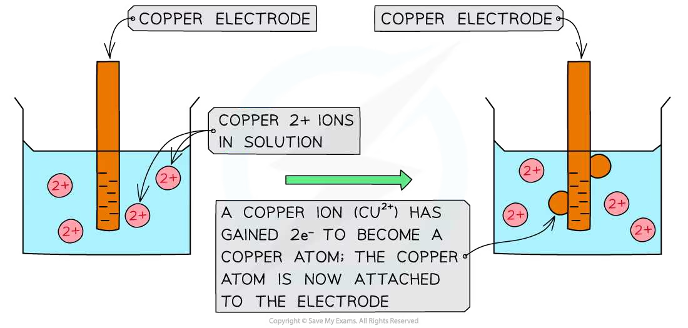
Standard conditions and \(E^\ominus\)
The standard electrode potential, \(E^\ominus\), is the potential of a half-cell measured relative to the standard hydrogen electrode under standard conditions.
| Condition | Standard value |
|---|---|
| Temperature | \(298\ \mathrm{K}\) |
| Pressure of gases | \(101\ \mathrm{kPa}\) |
| Concentration of aqueous ions | \(1.00\ \mathrm{mol\ dm^{-3}}\) |
| Current during measurement | approximately zero; use a high-resistance voltmeter |
所有 \(E^\ominus\) 都是 reduction potentials。如果半方程式反向作为 oxidation half-equation，数值符号必须反过来。
Standard hydrogen electrode (SHE)
SHE 是测量其他标准电极电势的 primary reference electrode：
\[\ce{2H+(aq) + 2e- <=> H2(g)}\qquad E^\ominus=0.00\ \mathrm{V}\]
它包括 inert platinum electrode、标准压力的 hydrogen gas、\([\ce{H+}]=1.00\ \mathrm{mol\ dm^{-3}}\) 的酸性溶液和 \(298\ \mathrm{K}\)。与另一个 half-cell 连接时还需要 salt bridge 和 high-resistance voltmeter。
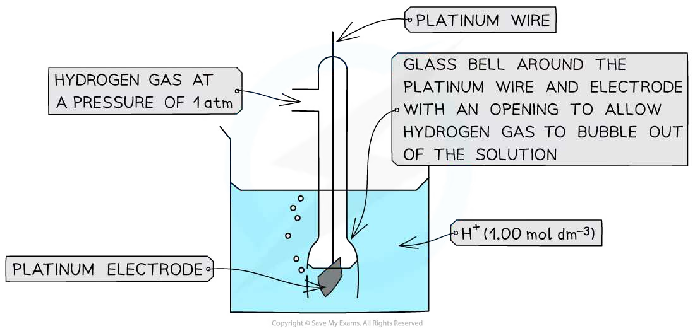
Types of half-cell and the electrode required
| Half-cell type | Example | Electrode needed |
|---|---|---|
| metal / metal ion | \(\ce{Cu^{2+}(aq) / Cu(s)}\) | Cu metal electrode |
| non-metal / non-metal ion | \(\ce{Br2(l) / Br-(aq)}\) | inert Pt electrode |
| ions with different oxidation states | \(\ce{MnO4-(aq), Mn^{2+}(aq), H+(aq)}\) | inert Pt electrode |
当 half-cell 中没有能导电且参与平衡的固体电极时，必须使用 platinum。Pt 是 inert conductor，不应写成反应物或生成物。
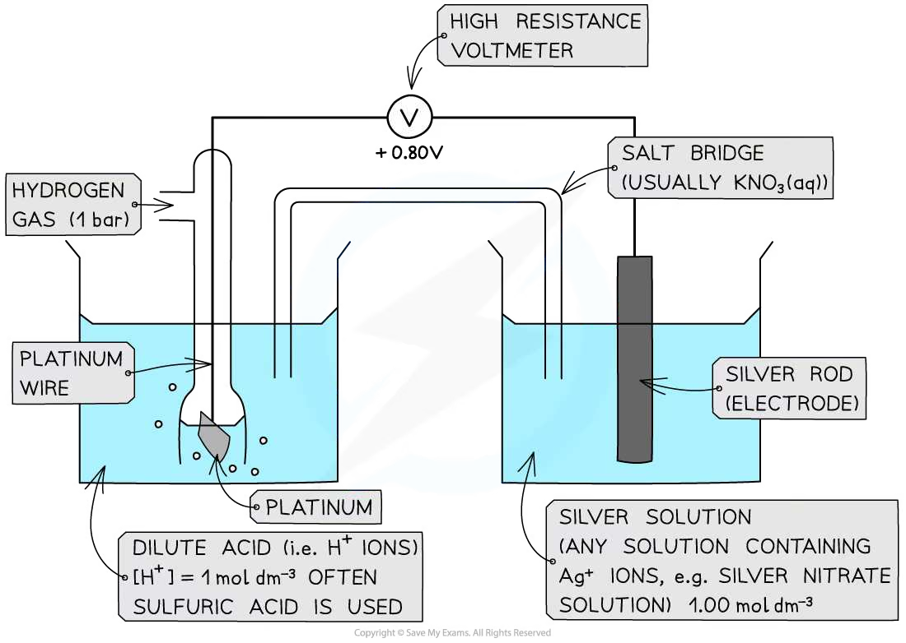
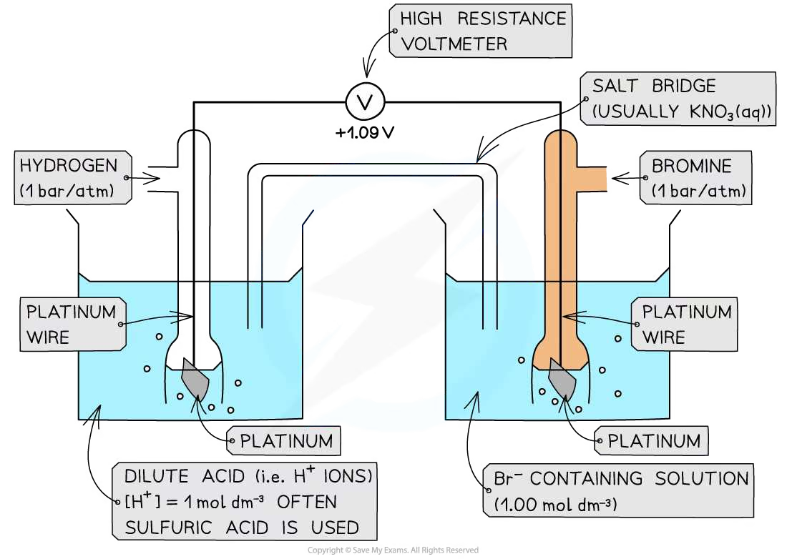
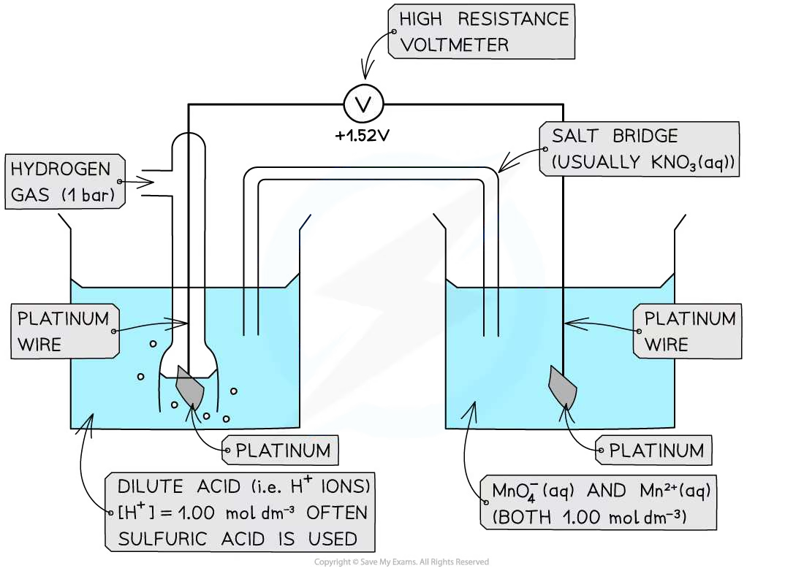
Salt bridge and conventional cell diagrams
Salt bridge 让离子移动、维持两侧电中性并闭合内电路。若一侧有 \(\ce{Ag+}\)，不要使用含 \(\ce{Cl-}\) 的 KCl，因为会生成 \(\ce{AgCl(s)}\)。
以 Zn/Cu galvanic cell 为例：
\[\ce{Zn(s) | Zn^{2+}(aq) || Cu^{2+}(aq) | Cu(s)}\]
左侧写 oxidation half-cell，通常是 negative pole / anode；右侧写 reduction half-cell，通常是 positive pole / cathode。电子由 negative pole to positive pole。

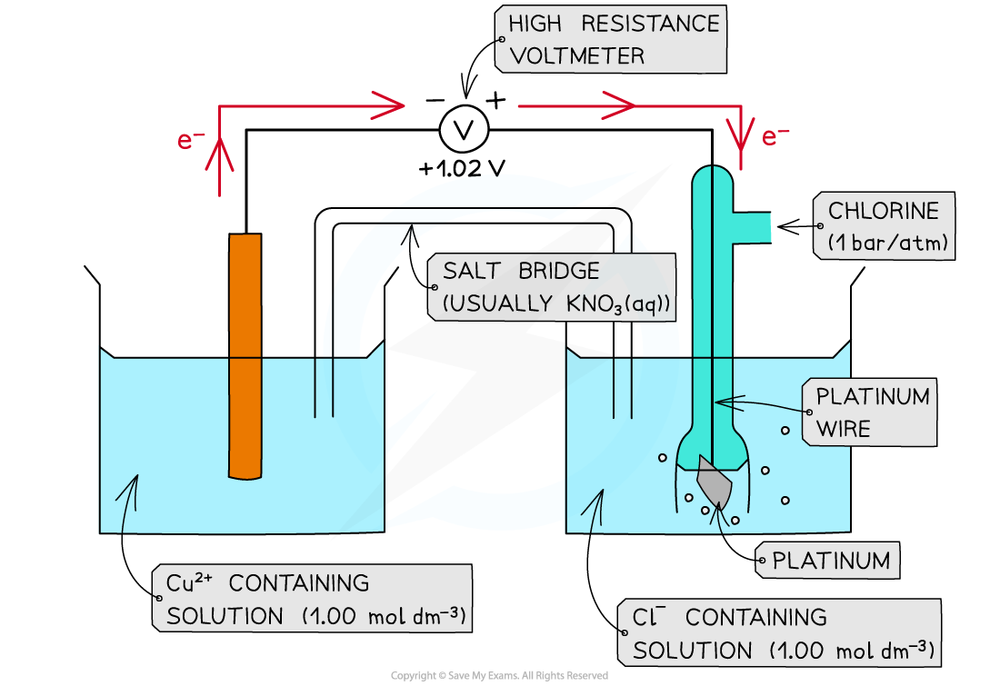
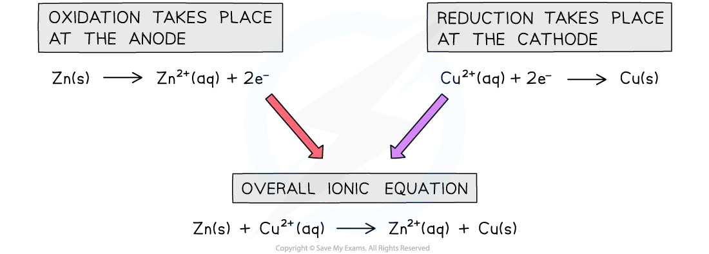
Calculating \(E^\ominus_{\mathrm{cell}}\) and feasibility
\[E^\ominus_{\mathrm{cell}}=E^\ominus_{\mathrm{reduction}}-E^\ominus_{\mathrm{oxidation}}\]
也可以说是 more positive \(E^\ominus\) 减去 less positive \(E^\ominus\)。不要把两个 reduction potentials 相加，也不要在已经反向写出 oxidation equation 后忘记变号。
| \(E^\ominus_{\mathrm{cell}}\) | Meaning |
|---|---|
| positive | reaction is feasible under standard conditions |
| zero | no net driving force at equilibrium |
| negative | written forward reaction is not feasible under standard conditions |
Feasible 表示热力学上有可能发生，不等于反应一定快速发生；速率还可能受 activation energy 和其他动力学因素影响。
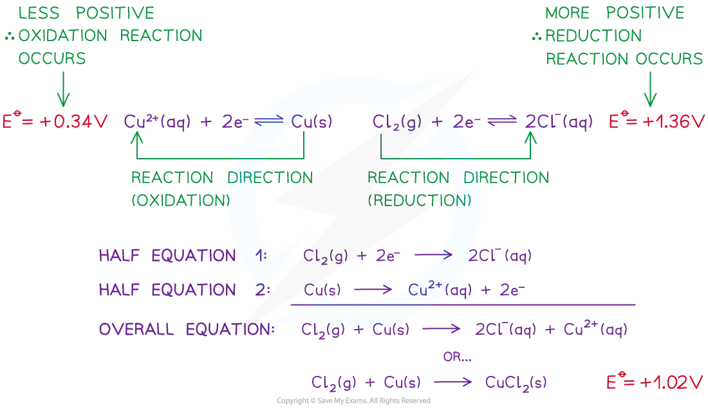
Oxidising and reducing agents
- Oxidising agent accepts electrons and is reduced；在 reduction half-equation 左侧寻找。
- Reducing agent donates electrons and is oxidised；在 reduction half-equation 右侧寻找。
- 较正的左侧物种通常是较强 oxidising agent；较负半方程式右侧物种通常是较强 reducing agent。
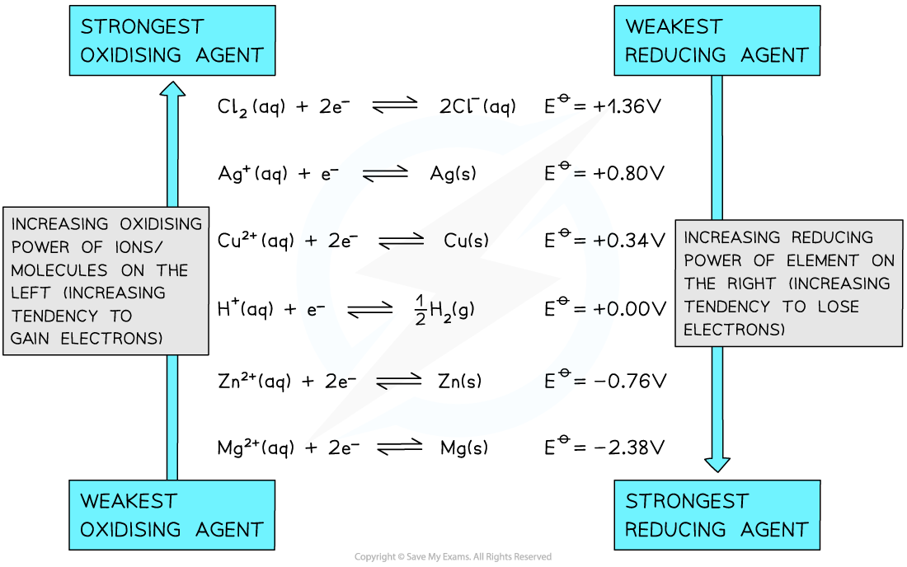
Balancing ionic redox equations
根据 \(E^\ominus\) 选 reduction；反转另一个方程式作 oxidation；配平电子数；相加并约去电子；检查原子、电荷和状态符号。酸性条件下可以使用 \(\ce{H+}\)、\(\ce{H2O}\) 配平；不要把电子写在最终 overall equation 中。
Nernst equation and non-standard conditions
标准电极电势只适用于 standard conditions。改变 ion concentration、gas pressure 或 temperature 后，要使用实际 electrode potential \(E\)。
\[E=E^\ominus-\frac{RT}{nF}\ln Q\]
对于 reduction half-equation \(\ce{Ox + n e- <=> Red}\)：
\[E=E^\ominus+\frac{RT}{nF}\ln\left(\frac{[\mathrm{Ox}]}{[\mathrm{Red}]}\right)\]
298 K 时：
\[E=E^\ominus+\frac{0.059}{n}\log_{10}\left(\frac{[\mathrm{oxidised\ species}]}{[\mathrm{reduced\ species}]}\right)\]
其中 \(R=8.31\ \mathrm{J\ K^{-1}\ mol^{-1}}\)，\(F=96500\ \mathrm{C\ mol^{-1}}\)，\(n\) 是转移电子数。纯固体和纯液体的 activity 取 1，不写入 concentration quotient。
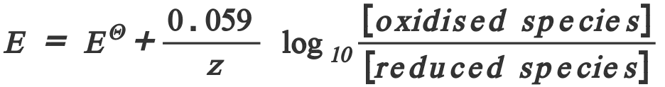
Effect of concentration on electrode potential
对 \(\ce{Ox + n e- <=> Red}\)，增加 \([\ce{Ox}]\) 会使平衡右移、\(E\) 变得更正；增加 \([\ce{Red}]\) 会使平衡左移、\(E\) 变得更负。Common-ion effect 可能通过沉淀降低某个 ion 的浓度，进而改变 \(E\)。
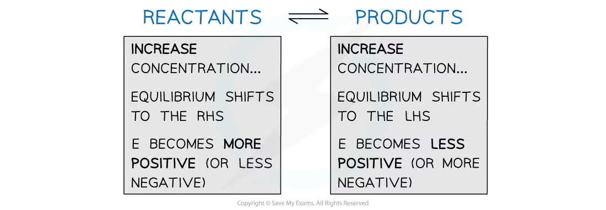
Linking \(E^\ominus_{\mathrm{cell}}\) and \(\Delta G^\ominus\)
\[\Delta G^\ominus=-nFE^\ominus_{\mathrm{cell}}\]
\(\Delta G^\ominus\) 的单位先得到 \(\mathrm{J\ mol^{-1}}\)；若题目要求 \(\mathrm{kJ\ mol^{-1}}\)，最后除以 1000。\(E^\ominus_{\mathrm{cell}}>0\) 时，\(\Delta G^\ominus<0\)，正向反应 thermodynamically feasible。
Worked example · Nernst equation
Fe³⁺/Fe²⁺ half-cell
Calculate the electrode potential at 298 K of a Fe³⁺/Fe²⁺ half-cell.
\[\ce{Fe3+(aq) + e- <=> Fe2+(aq)}\]
\[[\ce{Fe3+}]=0.034\ \mathrm{mol\ dm^{-3}}\]
\[[\ce{Fe2+}]=0.64\ \mathrm{mol\ dm^{-3}}\]
\[E^\ominus=+0.77\ \mathrm{V}\]
Oxidised species: \(\ce{Fe3+}\).
Reduced species: \(\ce{Fe2+}\).
\(z=1\).
Use the Nernst equation:
\[E=E^\ominus+\frac{0.059}{z}\log_{10}\left(\frac{[\mathrm{oxidised\ species}]}{[\mathrm{reduced\ species}]}\right)\]
Substitute the values:
\[E=(+0.77)+\frac{0.059}{1}\log_{10}\left(\frac{0.034}{0.64}\right)\]
\[E=(+0.77)+(-0.075)\]
Final answer: \(E=+0.69\ \mathrm{V}\).
Worked example · Nernst equation
Cu²⁺/Cu half-cell
Calculate the electrode potential at 298 K of a Cu²⁺/Cu half-cell.
\[\ce{Cu2+(aq) + 2e- <=> Cu(s)}\]
\[[\ce{Cu2+}]=0.0010\ \mathrm{mol\ dm^{-3}}\]
\[E^\ominus=+0.34\ \mathrm{V}\]
Oxidised species: \(\ce{Cu2+}\).
Reduced species: \(\ce{Cu(s)}\).
Solid Cu is not included in the Nernst quotient; its activity is fixed at 1.0.
\(z=2\).
Substitute the values:
\[E=0.34+\frac{0.059}{2}\log_{10}\left(\frac{0.0010}{1.0}\right)\]
\[E=(+0.34)+(-0.089)\]
Final answer: \(E=+0.25\ \mathrm{V}\).
Exam tip: use the full Nernst equation if the temperature is not 298 K; the simplified equation above is the syllabus form for 298 K.
Worked example · Gibbs energy
Standard Gibbs free energy change for an electrochemical cell
Calculate the standard Gibbs free energy change for the following electrochemical cell:
\[\ce{2Fe3+(aq) + Cu(s) -> 2Fe2+(aq) + Cu2+(aq)}\]
Write the relevant half-equations and their standard electrode potentials:
\[\ce{Fe3+(aq) + e- <=> Fe2+(aq)}\qquad E^\ominus=+0.77\ \mathrm{V}\]
\[\ce{Cu2+(aq) + 2e- <=> Cu(s)}\qquad E^\ominus=+0.34\ \mathrm{V}\]
Calculate the standard cell potential:
\[E^\ominus_{\mathrm{cell}}=E^\ominus_{\mathrm{red}}-E^\ominus_{\mathrm{ox}}=(+0.77)-(+0.34)=+0.43\ \mathrm{V}\]
The \(\ce{Cu2+/Cu}\) half-cell has the smaller \(E^\ominus\), so Cu is oxidised and transfers two electrons to two \(\ce{Fe3+}\) ions. Therefore, \(n=2\).
Use:
\[\Delta G^\ominus=-n\times E^\ominus_{\mathrm{cell}}\times F\]
Substitute \(F=96\,500\ \mathrm{C\ mol^{-1}}\):
\[\Delta G^\ominus=-2\times(+0.43)\times96\,500\]
\[\Delta G^\ominus=-82\,990\ \mathrm{J\ mol^{-1}}\]
Final answer: \(\Delta G^\ominus\approx-83\ \mathrm{kJ\ mol^{-1}}\).
Structured Questions
24 Electrochemistry - Structured Questions
本页只选取与电化学标准电势、SHE、半电池、电池电势、Nernst equation、Gibbs energy，以及考纲中的 Faraday、电镀和 Avogadro constant 计算直接相关的 Structured Questions。独立的定性 Electrolysis 产物判断题不在本页；保留的 Faraday 题用于训练考纲要求的电量、电子数和沉积量计算。
24.1 Electrolysis
Example 6 · Faraday constant from charge measurements · 24.1 SQ Medium Q1
An experiment passes a measured charge through a cell. The amount of substance formed is calculated from the number of electrons in its half-equation.
(a) State the relationship between charge, current and time. [1 mark]
(b) State the value and unit of the Faraday constant. [1 mark]
(c) Explain why the number of moles of electrons must be found before the amount of product is calculated. [2 marks]
Show mark scheme / model answer
- (a) \(Q=It\).
[1] - (b) \(F=96500\ \mathrm{C\ mol^{-1}}\) of electrons.
[1] - (c) The charge is related to moles of electrons by \(Q=n(e^-)F\); the half-equation gives the mole ratio between electrons and the required product.
[2]
Example 13 · Electroplating zinc · 24.1 SQ Medium Q2
A current of \(2.50\ \mathrm{A}\) is passed for \(20.0\) minutes. Zinc is deposited according to:
\[\ce{Zn^{2+} + 2e- -> Zn}\]
Calculate the mass of zinc deposited. Use \(F=96500\ \mathrm{C\ mol^{-1}}\) and \(A_r(\ce{Zn})=65.4\).
[4 marks]
Show mark scheme / model answer
\[Q=It=2.50\times(20.0\times60)=3000\ \mathrm{C}\]
\[n(e^-)=\frac{3000}{96500}=0.0311\ \mathrm{mol}\]
\[n(\ce{Zn})=\frac{0.0311}{2}=0.0155\ \mathrm{mol}\]
\[m=0.0155\times65.4=1.01\ \mathrm{g}\][4]
Example 14 · Avogadro constant experiment · 24.1 SQ Medium Q3
In an experiment, a copper electrode gains \(0.299\ \mathrm{g}\) after a current of \(0.375\ \mathrm{A}\) flows for \(40.0\) minutes. Copper is deposited according to \(\ce{Cu^{2+}+2e- -> Cu}\). Use \(A_r(\ce{Cu})=63.5\) and the electronic charge \(e=1.60\times10^{-19}\ \mathrm{C}\).
(a) Calculate the charge passed. [1 mark]
(b) Calculate the Faraday constant from the mass change. [3 marks]
(c) Calculate the Avogadro constant \(L\) using \(F=Le\). [2 marks]
Show mark scheme / model answer
- (a) \(Q=0.375\times(40.0\times60)=900\ \mathrm{C}\).
[1] - (b) \(n(\ce{Cu})=0.299/63.5=4.71\times10^{-3}\ \mathrm{mol}\); \(n(e^-)=2n(\ce{Cu})=9.42\times10^{-3}\ \mathrm{mol}\); \(F=Q/n(e^-)=9.55\times10^4\ \mathrm{C\ mol^{-1}}\).
[3] - (c) \(L=F/e=(9.55\times10^4)/(1.60\times10^{-19})\approx5.97\times10^{23}\ \mathrm{mol^{-1}}\).
[2]
24.2 Standard electrode potentials - Easy
Example 1 · Chromium half-cell and standard conditions · 24.2 SQ Easy Q1
The chromium half-cell containing \(\ce{Cr/Cr^{3+}}\) is connected to a copper half-cell containing \(\ce{Cu/Cu^{2+}}\). For the copper half-cell, \(E^\ominus=+0.34\ \mathrm{V}\). The standard cell potential is \(+1.08\ \mathrm{V}\) and the copper half-cell undergoes reduction.
(a) Calculate the standard electrode potential of the \(\ce{Cr/Cr^{3+}}\) half-cell. [2 marks]
(b) Write the two half-equations that occur if the chromium half-cell is connected to the standard hydrogen electrode. [2 marks]
(c) State the standard conditions used when measuring a standard electrode potential. [3 marks]
Show mark scheme / model answer
- (a) \(E^\ominus(\ce{Cr^{3+}/Cr})=+0.34-1.08=-0.74\ \mathrm{V}\).
[2] - (b) Chromium: \(\ce{Cr -> Cr^{3+}+3e-}\); hydrogen: \(\ce{2H+ +2e- -> H2}\).
[2] - (c) Temperature \(298\ \mathrm{K}\); gas pressure \(101\ \mathrm{kPa}\); aqueous ion concentration \(1.00\ \mathrm{mol\ dm^{-3}}\).
[3]
Example 2 · Equilibrium position and standard hydrogen electrode · 24.2 SQ Easy Q2
The following reduction half-equations have standard electrode potentials of \(+0.80\ \mathrm{V}\), \(+0.89\ \mathrm{V}\) and \(-0.83\ \mathrm{V}\) respectively.
(a) Identify which half-equation has its equilibrium position furthest left and which has its equilibrium position furthest right. [2 marks]
(b) Describe a standard hydrogen electrode. [2 marks]
(c) State the standard electrode potential of the standard hydrogen electrode. [1 mark]
Show mark scheme / model answer
- (a) The most negative value, \(-0.83\ \mathrm{V}\), is furthest left; the most positive value, \(+0.89\ \mathrm{V}\), is furthest right.
[2] - (b) Platinum electrode in contact with hydrogen gas at standard pressure and an aqueous solution with \([\ce{H+}]=1.00\ \mathrm{mol\ dm^{-3}}\), at \(298\ \mathrm{K}\).
[2] - (c) \(E^\ominus=0.00\ \mathrm{V}\).
[1]
Example 3 · Half-cell types and cell notation · 24.2 SQ Easy Q3
(a) State the electrode required for each half-cell:
- \(\ce{Cu^{2+}(aq) / Cu(s)}\);
- \(\ce{Br2(l) / Br-(aq)}\);
- \(\ce{Fe^{3+}(aq), Fe^{2+}(aq)}\).
[3 marks]
(b) Write the conventional cell diagram for a zinc/copper cell. [2 marks]
(c) State the direction of electron flow in the external circuit. [1 mark]
Show mark scheme / model answer
- (a) \(\ce{Cu^{2+}/Cu}\) is metal/metal ion and does not need Pt; \(\ce{Br2/Br-}\) is non-metal/non-metal ion and needs Pt; \(\ce{Fe^{3+}/Fe^{2+}}\) is ion/ion and needs Pt.
[3] - (b) \(\ce{Zn(s) | Zn^{2+}(aq) || Cu^{2+}(aq) | Cu(s)}\).
[2] - (c) From zinc / the negative electrode to copper / the positive electrode.
[1]
24.2 Standard electrode potentials - Medium
Example 4 · Salt bridge and electrode polarity · 24.2 SQ Medium Q1
A cell is made from \(\ce{Fe^{2+}/Fe}\) and \(\ce{Cu^{2+}/Cu}\) half-cells.
(a) Explain two functions of the salt bridge. [2 marks]
(b) Use the following data to identify the negative electrode:
\[\ce{Cu^{2+} + 2e- -> Cu} \qquad E^\ominus=+0.34\ \mathrm{V}\]
\[\ce{Fe^{2+} + 2e- -> Fe} \qquad E^\ominus=-0.44\ \mathrm{V}\]
[1 mark]
(c) Write the overall cell equation. [2 marks]
Show mark scheme / model answer
- (a) It allows ion movement to maintain electrical neutrality; it completes the internal circuit.
[2] - (b) Iron / the Fe electrode.
[1] - (c) \(\ce{Fe(s) + Cu^{2+}(aq) -> Fe^{2+}(aq) + Cu(s)}\).
[2]
Example 5 · Feasibility and oxidising/reducing agents · 24.2 SQ Medium Q2
The following standard electrode potentials are available:
\[\ce{Cl2 + 2e- <=> 2Cl-} \qquad E^\ominus=+1.36\ \mathrm{V}\]
\[\ce{Cu^{2+} + 2e- <=> Cu} \qquad E^\ominus=+0.34\ \mathrm{V}\]
(a) Identify the oxidising agent and reducing agent in the reaction between chlorine and copper. [2 marks]
(b) Calculate \(E^\ominus_{\mathrm{cell}}\). [1 mark]
(c) State whether the reaction \(\ce{Cl2 + Cu -> 2Cl- + Cu^{2+}}\) is feasible under standard conditions. [1 mark]
Show mark scheme / model answer
- (a) Oxidising agent: \(\ce{Cl2}\); reducing agent: Cu.
[2] - (b) \(E^\ominus_{\mathrm{cell}}=+1.36-(+0.34)=+1.02\ \mathrm{V}\).
[1] - (c) Yes, because \(E^\ominus_{\mathrm{cell}}\) is positive.
[1]
24.2 Standard electrode potentials - Hard
Example 7 · Lithium-iodine cell · 24.2 SQ Hard Q1
A lithium-iodine cell contains no aqueous electrolyte. The relevant half-equations are:
\[\ce{Li+ + e- -> Li} \qquad E^\ominus=-3.05\ \mathrm{V}\]
\[\ce{I2 + 2e- -> 2I-} \qquad E^\ominus=+0.53\ \mathrm{V}\]
(a) Identify the oxidation and reduction half-reactions when the cell discharges. [2 marks]
(b) Write the overall equation. [2 marks]
(c) Calculate \(E^\ominus_{\mathrm{cell}}\). [1 mark]
(d) Suggest why an aqueous salt bridge is not suitable for this cell. [1 mark]
Show mark scheme / model answer
- (a) Oxidation: \(\ce{Li -> Li+ + e-}\); reduction: \(\ce{I2 + 2e- -> 2I-}\).
[2] - (b) \(\ce{2Li + I2 -> 2Li+ + 2I-}\).
[2] - (c) \(E^\ominus_{\mathrm{cell}}=+0.53-(-3.05)=+3.58\ \mathrm{V}\).
[1] - (d) Water would react with lithium / the cell is designed to operate without liquid water.
[1]
Example 8 · Testing a standard hydrogen electrode setup · 24.2 SQ Hard Q2
A student proposes a standard hydrogen electrode using an ammeter, ethanoic acid and a potassium chloride salt bridge. Explain the correction needed in each case.
(a) The ammeter. [1 mark]
(b) The ethanoic acid solution. [2 marks]
(c) The potassium chloride salt bridge when the other half-cell contains \(\ce{Ag+}\). [2 marks]
Show mark scheme / model answer
- (a) Replace the ammeter with a high-resistance voltmeter so that essentially no current flows during the potential measurement.
[1] - (b) Use a strong acid with \([\ce{H+}]=1.00\ \mathrm{mol\ dm^{-3}}\); ethanoic acid is only partially dissociated and does not provide the stated hydrogen-ion concentration reliably.
[2] - (c) Replace KCl with a nitrate salt bridge; \(\ce{Cl-}\) would react with \(\ce{Ag+}\) to form \(\ce{AgCl(s)}\).
[2]
Example 9 · Balancing a redox equation from electrode potentials · 24.2 SQ Hard Q3
In acidic solution:
\[\ce{Cr2O7^{2-} + 14H+ + 6e- -> 2Cr^{3+} + 7H2O} \qquad E^\ominus=+1.36\ \mathrm{V}\]
\[\ce{Br2 + 2e- -> 2Br-} \qquad E^\ominus=+1.09\ \mathrm{V}\]
(a) Write the oxidation half-equation for bromide ions. [1 mark]
(b) Write the balanced overall equation. [3 marks]
(c) Calculate \(E^\ominus_{\mathrm{cell}}\) and state whether the reaction is feasible. [2 marks]
Show mark scheme / model answer
- (a) \(\ce{2Br- -> Br2 + 2e-}\).
[1] - (b) Multiply the bromide equation by 3 and add: \(\ce{Cr2O7^{2-} + 14H+ + 6Br- -> 2Cr^{3+} + 3Br2 + 7H2O}\).
[3] - (c) \(E^\ominus_{\mathrm{cell}}=1.36-1.09=+0.27\ \mathrm{V}\); feasible under standard conditions.
[2]
24.2 Standard electrode potentials and calculations - Easy
Example 10 · Magnesium-iodine cell calculation · 24.2 SQ Easy Q4
The standard electrode potentials are:
\[\ce{Mg^{2+} + 2e- -> Mg} \qquad E^\ominus=-2.38\ \mathrm{V}\]
\[\ce{I2 + 2e- -> 2I-} \qquad E^\ominus=+0.54\ \mathrm{V}\]
(a) Write the overall reaction. [2 marks]
(b) Calculate \(E^\ominus_{\mathrm{cell}}\). [1 mark]
(c) State the strongest oxidising agent in the two half-equations. [1 mark]
Show mark scheme / model answer
- (a) \(\ce{Mg + I2 -> Mg^{2+} + 2I-}\).
[2] - (b) \(E^\ominus_{\mathrm{cell}}=+0.54-(-2.38)=+2.92\ \mathrm{V}\).
[1] - (c) \(\ce{I2}\), because it is the oxidised species in the half-equation with the more positive reduction potential.
[1]
Example 11 · Nernst equation for a copper half-cell · 24.2 SQ Easy Q5
For \(\ce{Cu^{2+} + 2e- <=> Cu}\), \(E^\ominus=+0.34\ \mathrm{V}\). Calculate the electrode potential at \(298\ \mathrm{K}\) when \([\ce{Cu^{2+}}]=0.0010\ \mathrm{mol\ dm^{-3}}\).
[3 marks]
Show mark scheme / model answer
\[E=E^\ominus+\frac{0.059}{2}\log_{10}[\ce{Cu^{2+}}]\]
\[E=0.34+\frac{0.059}{2}\log_{10}(0.0010)=+0.25\ \mathrm{V}\]
The solid copper has unit activity and is omitted from the quotient.[3]
Example 12 · Gibbs free energy from cell potential · 24.2 SQ Easy Q6
For a cell reaction, \(E^\ominus_{\mathrm{cell}}=+0.43\ \mathrm{V}\) and \(n=2\).
(a) Calculate \(\Delta G^\ominus\). Use \(F=96500\ \mathrm{C\ mol^{-1}}\). [2 marks]
(b) Explain the sign of your answer. [1 mark]
Show mark scheme / model answer
- (a) \(\Delta G^\ominus=-nFE^\ominus_{\mathrm{cell}}=-2\times96500\times0.43=-8.30\times10^4\ \mathrm{J\ mol^{-1}}=-83.0\ \mathrm{kJ\ mol^{-1}}\).
[2] - (b) It is negative because the cell reaction is thermodynamically feasible under standard conditions.
[1]
24.2 Standard electrode potentials and calculations - Medium
Example 15 · Common-ion effect and electrode potential · 24.2 SQ Medium Q3
An iron/silver cell is set up. Silver ions are removed from the solution by adding chloride ions, forming \(\ce{AgCl(s)}\).
(a) Explain how the concentration of silver ions changes. [1 mark]
(b) Use the Nernst equation to explain the effect on the \(\ce{Ag+/Ag}\) electrode potential. [2 marks]
(c) State how the cell potential changes if the iron half-cell is unchanged. [1 mark]
Show mark scheme / model answer
- (a) \([\ce{Ag+}]\) decreases because insoluble \(\ce{AgCl}\) precipitates.
[1] - (b) For \(\ce{Ag+ + e- <=> Ag}\), \(E=E^\ominus+0.059\log_{10}[\ce{Ag+}]\) at \(298\ \mathrm{K}\); decreasing \([\ce{Ag+}]\) makes \(E\) less positive.
[2] - (c) The cell potential decreases if the silver half-cell remains the reduction half-cell.
[1]
24.2 Standard electrode potentials and calculations - Hard
Example 16 · Nernst equation at 20 °C · 24.2 SQ Hard Q4
For \(\ce{Ag+ + e- <=> Ag}\), \(E^\ominus=+0.80\ \mathrm{V}\). Calculate \([\ce{Ag+}]\) at \(20\ ^\circ\mathrm{C}\) when \(E=+0.72\ \mathrm{V}\).
Use \(R=8.31\ \mathrm{J\ K^{-1}\ mol^{-1}}\), \(F=96500\ \mathrm{C\ mol^{-1}}\).
[3 marks]
Show mark scheme / model answer
\[T=293\ \mathrm{K}\]
\[0.72=0.80+\frac{RT}{nF}\ln[\ce{Ag+}]\]
\[\ln[\ce{Ag+}]=\frac{(0.72-0.80)\times96500}{8.31\times293}=-3.17\]
\[[\ce{Ag+}]=e^{-3.17}=4.2\times10^{-2}\ \mathrm{mol\ dm^{-3}}\][3]
Example 17 · Dichromate and bromide in acidic solution · 24.2 SQ Hard Q5
Use the half-equations below to answer the questions.
\[\ce{Cr2O7^{2-} + 14H+ + 6e- -> 2Cr^{3+} + 7H2O} \qquad E^\ominus=+1.33\ \mathrm{V}\]
\[\ce{Br2 + 2e- -> 2Br-} \qquad E^\ominus=+1.07\ \mathrm{V}\]
(a) Write the overall ionic equation. [3 marks]
(b) Calculate \(E^\ominus_{\mathrm{cell}}\). [1 mark]
(c) Calculate \(\Delta G^\ominus\) for the overall reaction and state whether it is feasible. Use \(F=96500\ \mathrm{C\ mol^{-1}}\). [3 marks]
Show mark scheme / model answer
- (a) \(\ce{Cr2O7^{2-} + 14H+ + 6Br- -> 2Cr^{3+} + 3Br2 + 7H2O}\).
[3] - (b) \(E^\ominus_{\mathrm{cell}}=1.33-1.07=+0.26\ \mathrm{V}\).
[1] - (c) \(\Delta G^\ominus=-6\times96500\times0.26=-1.50\times10^5\ \mathrm{J\ mol^{-1}}=-150\ \mathrm{kJ\ mol^{-1}}\); the negative value shows the reaction is feasible under standard conditions.
[3]
Example 18 · Comparing electrochemical series data · 24.2 SQ Hard Q6
The following values are given:
| Reduction half-equation | \(E^\ominus\)/V |
|---|---|
| \(\ce{Co^{3+} + e- -> Co^{2+}}\) | \(+1.82\) |
| \(\ce{Fe^{3+} + e- -> Fe^{2+}}\) | \(+0.77\) |
| \(\ce{Cu^{2+} + 2e- -> Cu}\) | \(+0.34\) |
| \(\ce{Zn^{2+} + 2e- -> Zn}\) | \(-0.76\) |
(a) Identify the strongest oxidising agent. [1 mark]
(b) Identify the strongest reducing agent among the reduced species shown. [1 mark]
(c) Predict whether \(\ce{2Fe^{3+} + Cu -> 2Fe^{2+} + Cu^{2+}}\) is feasible and calculate \(E^\ominus_{\mathrm{cell}}\). [2 marks]
Show mark scheme / model answer
- (a) \(\ce{Co^{3+}}\), because it has the most positive reduction potential.
[1] - (b) Zn, because \(\ce{Zn^{2+}/Zn}\) has the most negative reduction potential and Zn is most readily oxidised.
[1] - (c) \(E^\ominus_{\mathrm{cell}}=0.77-0.34=+0.43\ \mathrm{V}\); yes, it is feasible under standard conditions.
[2]